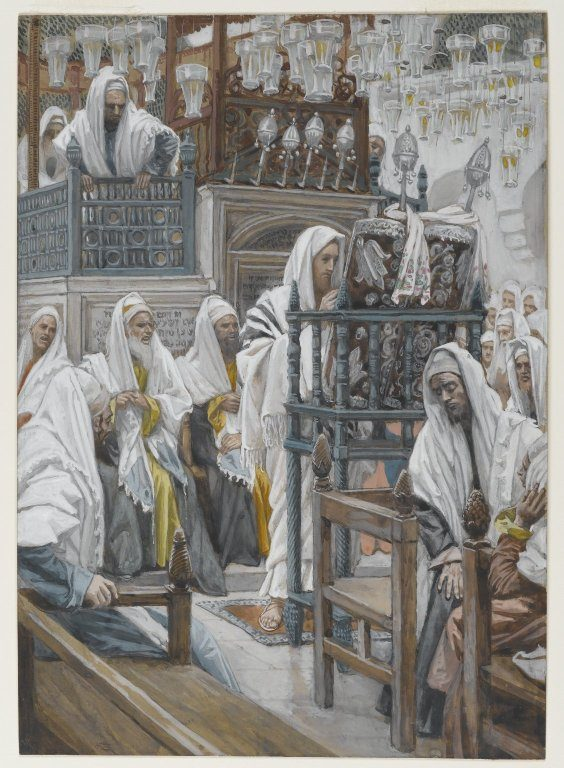

Luke 4 — The Mister Translation

⚠ The painter’s synagogue is his own century’s. Tissot made his Life of Christ series after travelling in Palestine in the late 1880s, and he furnished this scene with what he could see there: striped prayer shawls, hanging glass lamps, a tall carved reading desk, a scroll kept in a decorated case. No first-century synagogue has been excavated at Nazareth. Luke gives only a scroll, an attendant, a reader who stands and a teacher who sits (vv16–20). The title’s “Book” is the King James wording; Luke’s biblion is a scroll.
_-_James_Tissot_-_overall.jpg){kind=link}
⭐ “Full of the Holy Spirit” — a phrase that belongs to Luke. John, Elizabeth and Zechariah were each “filled with” the Spirit (1:15, 1:41, 1:67), a verb for something that happens at a moment. Here Luke uses the adjective, plērēs, for a state. The exact phrase stands in three verses of the New Testament and all three are his: this one, and in Acts of Stephen at the moment he sees heaven open (Acts 7:55) and of Barnabas (Acts 11:24; neither yet on these pages). The story picks up where the baptism left it, at the river: he “returned from the Jordan” with the Spirit that came down on him there (3:22). The NWT 1984 reads ‘full of holy spirit’, lower case and without the article — its standing doctrinal convention for the spirit, not a feature of this verse.
⭐ Led IN the wilderness, not INTO it. Mark says the Spirit “drove him out into the wilderness” (Mark 1:12) and Matthew has him “led up into” it (Matthew 4:1). Luke writes ēgeto… en tē erēmō: an imperfect verb, “was being led,” and “in,” not “into.” The Spirit is not delivering him to the place of testing and leaving; the leading goes on through the forty days. The later Greek text, the Textus Receptus, changed the preposition to “into,” matching the other Gospels. The two most literal witnesses on the shelf follow the older text: the ASV reads ‘was led in the Spirit in the wilderness’ and the NWT 1984 ‘he was led about by the spirit in the wilderness’; the KJV has ‘was led by the Spirit into the wilderness’, and the NIV keeps ‘into the wilderness’.
⭐⭐ Deuteronomy 8:2 in Luke’s own words. Moses told Israel to remember “all the way that Jehovah your God led you these forty years in the wilderness, to humble you, to test you” (Deuteronomy 8:2, already on these pages). The Greek Old Testament puts it ēgagen se… en tē erēmō… peirasē se — led, in the wilderness, test. Luke’s sentence has every one of those terms, with days for years, and the first answer Jesus gives (v4) quotes the very next verse of Deuteronomy. The note at Matthew 4:1 traced Matthew’s “forty days and forty nights” to Moses fasting on the mountain; Luke never says “fasted” and never says “nights.” He says “he ate nothing,” and points at Israel’s forty years instead of Moses’s forty days.
“Tested,” as at Matthew 4:1. Peirazō is both to test and to tempt, and this translation reads “tested” for the reason Matthew’s note gives: the passage the answers come from is itself about a testing. Keeping one English root lets the reader follow one Greek root through the scene — “tested” (v2), “put to the test” (v12, ekpeirazō), “every test” (v13, peirasmos). The KJV reads ‘tempted of the devil’, as does most of the shelf. And in Luke’s chapter the tempter has one name only: he is “the devil” four times (vv2, 3, 6, 13), never “the tempter” and, in the older text, never “Satan” (see v8).
⭐⭐ The devil opens where the genealogy ended. Luke put his family tree between the baptism and the wilderness, and its last link is “of Adam, of God” (3:38); the voice before it said “You are my beloved Son” (3:22). The devil’s first words are “If you are the Son of God.” Matthew’s note made the point about the voice; Luke, alone of the two, sets a list of fathers ending in God immediately before the question, so the sonship being tested has been stated twice, once from heaven and once through Adam. The first test on the page is about food, as the first test in Genesis was (Genesis 3:6).
One stone, one loaf. Matthew’s devil says “these stones” and “loaves” (Matthew 4:3), which Matthew’s note tied to John’s “from these stones”; Luke has John’s saying too (3:8), but here he writes the singular — “this stone,” one loaf for one hungry man. The NWT 1984 reads ‘tell this stone to become a loaf of bread’; the KJV ‘command this stone that it be made bread’.
⚠ The quotation stops halfway. In the text printed here Jesus says only “Not on bread alone shall the human live.” Deuteronomy 8:3 goes on, “but by every utterance that comes from the mouth of Jehovah,” and Matthew quotes that half too (Matthew 4:4). Later copies of Luke complete the line — the Textus Receptus adds “but by every word of God” — and the shelf splits on exactly that seam. The KJV reads ‘but by every word of God’, the Geneva ‘but by every word of God’, and the Douay ‘but by every word of God’; the ASV ends ‘Man shall not live by bread alone’, the NIV ‘Man shall not live on bread alone’, and the NWT 1984 ‘Man must not live by bread alone’. A scribe who knew the verse had a reason to finish it, and none to cut it short.
The human. Ho anthrōpos, as at Matthew 4:4, and behind it the Hebrew ha-adam of Deuteronomy 8:3, which this library renders “the human”: a statement about humankind, set one verse after a genealogy that ended in Adam.
⭐ Luke’s order is not Matthew’s. Matthew runs bread, temple, mountain, and ends with “Go away, Satan!” (Matthew 4:10). Luke runs bread, kingdoms, temple, and ends in Jerusalem — the city his Gospel began in, with Zechariah burning incense in the sanctuary (1:9), and the city it closes in, with the disciples “continually in the temple” (24:53, not yet on these pages). Which order is the older cannot be known from the texts; each fits its own Gospel, and the library notes both.
⭐ No mountain. “He led him up” — up where, Luke does not say — “and showed him… in a moment of time.” Stigmē is a point, a prick, the smallest division of time, and the word stands nowhere else in the New Testament. It reads like a sight rather than a journey. The later Greek text supplies the mountain from Matthew, “the devil, taking him up into a high mountain,” and so do the KJV ‘taking him up into an high mountain’ and the Douay ‘led him into a high mountain’; the ASV reads only ‘he led him up’, and the NIV ‘led him up to a high place’ supplies a place the Greek does not name.
⭐⭐ The oikoumenē again. Matthew’s kingdoms are “of the world” (kosmos). Luke’s are “of the oikoumenē,” the inhabited world — the word of Caesar Augustus’s decree that “the whole inhabited world should be registered” (2:1). Two chapters, two claimants to the same territory: an emperor counting it, and the devil offering it.
⚠ “It has been handed over to me.” Only Luke has the devil explain his title: “for it has been handed over to me, and I give it to whomever I wish.” The verb is a perfect passive, paradedotai, and it does not say who handed it over. Jesus does not dispute the claim here either (see the diabolos entry). What is offered is exousia, authority — and before the chapter is out a synagogue in Capernaum will say of Jesus’s own word that it is “with authority” (vv32, 36). The KJV reads ‘All this power will I give thee’; the ASV ‘To thee will I give all this authority’.
⭐ “Bow down before me” — and the answer uses the same verb. The request is proskynēsēs enōpion emou, bow down in front of me; the answer is Deuteronomy 6:13 as Matthew also gives it, “You shall bow before the Lord your God, and him alone shall you serve.” The Hebrew says “you shall fear” and has no “alone” (Deuteronomy 6:13, already on these pages). The Greek Old Testament, as printed from Codex Vaticanus, adds “alone” (monō) and keeps “fear”; the “bow before” is the Gospels’ wording, and it is the devil’s own word handed back to him. “Serve” is latreuō, the service of worship: the NWT 1984 reads ‘it is to him alone you must render sacred service’, which is the verb’s exact sense.
⚠ “Get behind me, Satan” — not in Luke’s older text. The Textus Receptus opens Jesus’s reply with “Get behind me, Satan” — the words he says to Peter in Mark 8:33 and Matthew 16:23, close to Matthew’s “Go away, Satan!” in the wilderness (4:10). The KJV prints ‘Get thee behind me, Satan’ and the Geneva ‘Hence from me, Satan’; four other witnesses go straight to the quotation: the ASV ‘It is written, Thou shalt worship the Lord thy God’, the NIV ‘Worship the Lord your God and serve him only’, the NWT 1984 ‘It is Jehovah your God you must worship’, and the Douay, which translates the Latin Vulgate, ‘It is written: Thou shalt adore the Lord thy God’.
⭐ The devil quotes one phrase more in Luke — and cuts at the same place. On this library’s page Psalm 91:11 reads “For he will command his angels concerning you, to guard you in all your ways” (Psalm 91:11). Matthew’s devil drops both “to guard you” and “in all your ways” (Matthew 4:6; the note there shows why the second omission is the argument). Luke’s devil keeps “to guard you” — tou diaphylaxai se, the Greek Psalter’s own words — and still stops before “in all your ways.” Two Gospels quote the psalm at two different lengths and make the same cut.
“It is said.” Twice Jesus has answered “It is written” (vv4, 8). Now the devil has said it (“for it is written,” v10), and Jesus’s third answer changes formula: eirētai, “it has been said.” Matthew’s has “Again it is written” (Matthew 4:7).
“You shall not put the Lord your God to the test” — Deuteronomy 6:16, “as you tested him at Massah.” The Greek Old Testament translates the place-name: “as you tested him in the Testing” (en tō peirasmō). The verb here is the intensive ekpeirazō, and Luke uses it once more, of a lawyer who stands up “testing him” before the parable of the Good Samaritan (10:25, not yet on these pages). The ASV reads ‘Thou shalt not make trial of the Lord thy God’; the TLB adds an adjective the Greek does not have, ‘Do not put the Lord your God to a foolish test’.
⭐⭐ “Until an opportune time” — the devil is coming back. Achri kairou: kairos is the right moment, not just a stretch of time. The KJV ‘for a season’ and ASV ‘for a season’ make it sound like a pause; the NWT 1984 ‘until another convenient time’ and NIV ‘until an opportune time’ keep the waiting. Matthew ends the scene with angels ministering; Luke has no angels, only a departure with a date left blank. It is filled in at the Last Supper: “Satan entered into Judas” (22:3), and Jesus tells the apostles, “you are the ones who have stayed with me in my trials” — peirasmois, the word of v13 (22:28; both not yet on these pages). The phrase achri kairou appears once more in the New Testament, in Luke’s own Acts (13:11).
“In the power of the Spirit.” The Spirit is named four times in this chapter’s first eighteen verses (vv1 twice, 14, 18). “Spirit and power” were promised of John, who would go ahead “in the spirit and power of Elijah” (1:17), and joined at the annunciation, “the Holy Spirit will come upon you, and the power of the Most High” (1:35). Elijah himself will be named at v25. Dynamis comes back at v36, where the people say he commands the spirits “with authority and power.”
⭐⭐ “Being glorified by all.” Doxazō stands in nine verses of Luke’s Gospel. In eight of them the one glorified is God — the shepherds (2:20), the healed paralytic and the crowd (5:25–26), the leper who came back (17:15), the centurion at the cross (23:47). This is the one verse where people glorify Jesus. It comes three verses after the devil offered him “their glory” (doxa, v6) for one act of homage: the glory arrives anyway, unasked, from synagogues. The KJV and ASV both read ‘being glorified of all’; the NWT 1984 ‘being held in honor by all’, and the NIV ‘everyone praised him’, both of which lose the root.
⭐ Luke moves the hometown visit to the front. Mark tells it at 6:1–6 and Matthew at 13:54–58, well into the ministry, as a short scene of offense. Luke puts it first and makes it the opening statement of everything that follows — and leaves the seam showing: at v23 the townspeople already know of “what we heard had happened in Capernaum,” though Luke does not bring Jesus to Capernaum until v31.
Nazara. The town’s name in this form stands in two verses of the New Testament, this one and Matthew 4:13; elsewhere it is Nazareth or Nazaret. Mark never names the town in his hometown scene, and the note at Mark 6:1 said Luke would. “Where he had been brought up” points back to the end of Luke 2, where the family “returned to Galilee, to their own town of Nazareth” and the boy “went down with them and came to Nazareth” (2:39, 2:51).
⭐ “As was his custom.” Kata to eiōthos stands in two verses of the New Testament, both Luke’s: here, and of Paul at Thessalonica, who “as was his custom” went into the synagogue and on three Sabbaths reasoned from the Scriptures (Acts 17:2, not yet on these pages). The teacher and the apostle are given the same habit in the same words.
⭐ Reading, then teaching — the first-century synagogue. A Greek inscription found on the Ophel in Jerusalem in 1913, and usually dated before AD 70, records that a priest named Theodotus “built the synagogue for the reading of the Law and the teaching of the commandments.” Philo of Alexandria describes the Sabbath assembly the same way: the people sit, and “some priest who is present, or one of the old men, reads to them the holy laws, and explains each separately” (Hypothetica, preserved by Eusebius). Luke’s scene has both halves, the reading (vv16–20) and the teaching (v21). No first-century synagogue building has been excavated at Nazareth itself; one from the Second Temple period was uncovered in 2009 at Magdala, on the Sea of Galilee.
A scroll, unrolled. Biblion is a scroll here, not a bound book, and anaptyxas is to unroll or unfold it: the NWT 1984 reads ‘the scroll of the prophet Isaiah was handed him, and he opened the scroll’, and the NIV ‘Unrolling it’; the KJV has ‘the book of the prophet Esaias’ and the ASV ‘he opened the book’, the English of 1611 and 1901 for any written volume. The manuscripts divide on the verb itself: Codex Sinaiticus and Codex Bezae read anaptyxas, “unrolled,” and Codex Vaticanus and Codex Alexandrinus anoixas, “opened.” Bruce Metzger’s Textual Commentary keeps “unrolled,” a word found nowhere else in the New Testament, judging that copyists “accustomed to books in codex (or leaf) form” replaced it with the ordinary verb. A scroll of Isaiah copied more than a century earlier survives almost whole: the Great Isaiah Scroll from Qumran Cave 1, 7.34 metres long, whose 54 columns hold all 66 chapters, dated by the Israel Museum to about 125 BC. Luke says he “found the place” and does not say whether he chose it or it was the reading for the day.
⭐⭐ Where the reading stops. Isaiah 61:2 does not end at “the year of Jehovah’s favor.” The Hebrew goes on, ve-yom naqam le-eloheinu, “and the day of vengeance of our God,” and the Greek Old Testament has “and a day of retribution.” Luke’s reading ends at the comma. He rolls the scroll up in the middle of a sentence, and what he leaves unread is the vengeance (Isaiah 61 is not yet on these pages).
⭐ A line brought in from another chapter. “To send the crushed away in release” is not in Isaiah 61. It is Isaiah 58:6 as the Greek Old Testament has it, apostelle tethrausmenous en aphesei — part of the fast God says he has chosen. What joins the two passages is one word: aphesis, release, which stands in both. The join works only in Greek. In the Hebrew, Isaiah 61:1 proclaims deror to captives and Isaiah 58:6 sends the crushed away chofshim, free — two different words. The Mishnah, written down around AD 200, permits exactly this in a reading from the Prophets: “one may skip in the Prophet, but one may not skip in the Torah” (Megillah 4:4). Whether that rule was already the practice in Nazareth, no source says.
⚠ A line left out. Between “he has sent me” and “to proclaim release,” both the Hebrew and the Greek of Isaiah 61:1 have “to bind up” (Greek: “to heal”) “the brokenhearted.” The older text of Luke does not have it; the Textus Receptus restores it from Isaiah, and the shelf divides accordingly. The KJV reads ‘he hath sent me to heal the brokenhearted’, the Geneva ‘that I should heal the brokenhearted’, the Douay ‘to heal the contrite of heart’ and the TLB ‘he has sent me to heal the brokenhearted’; the ASV, NIV and NWT 1984 go straight from ‘sent me’ to the captives. The shorter text is that of Codices Sinaiticus, Vaticanus and Bezae; the line appears in Codex Alexandrinus and the Byzantine majority, where copyists brought the quotation back into line with Isaiah.
⚠ “Recovery of sight to the blind” — the Greek Old Testament’s line. The Hebrew of Isaiah 61:1 ends “and to the bound, peqach-qoach” — an opening, the doubled form of a verb used elsewhere for opening eyes. The Greek translator read the line as sight for the blind, and Luke quotes the Greek. The Brown–Driver–Briggs lexicon defines peqach-qoach as an opening of the eyes, used here as a figure for release from a dark prison, and records that the Greek translator appears to have read le-ivrim, “to the blind,” where the Hebrew has la-asurim, “to the bound.” Luke will pay the line off when John, in prison, sends to ask whether Jesus is the one who is coming, and is told “the blind see again” (7:22, not yet on these pages).
⭐⭐ A jubilee year. Aphesis is the Greek Old Testament’s word for the jubilee: “you shall proclaim liberty throughout the land” is, in Greek, “you shall proclaim aphesis,” and the fiftieth year is “a year of aphesis” (Leviticus 25:10, already on these pages); it is also the word for the seventh-year release of debts (Deuteronomy 15:1–2). Luke’s quotation has the word twice in one verse and ends on “a year.” He also changes Isaiah’s Greek verb at the close: the Greek Old Testament has “to call the year,” and Luke has “to proclaim” it, the same verb as the release two lines before.
⭐⭐ “The Lord’s year of welcome.” The Hebrew is shenat ratson, a year of favor; the Greek is eniauton… dekton, and dektos is the adjective of dechomai, to receive — received, welcome, acceptable. This translation reads “welcome” because the word comes back three verses later: “no prophet is dektos in his hometown” (v24). The ASV keeps the pair, ‘the acceptable year of the Lord’ and ‘No prophet is acceptable in his own country’, but “acceptable” now means “adequate.” The KJV reads ‘the acceptable year of the Lord’ and then ‘accepted’; the NIV reads ‘the year of the Lord’s favor’ and then ‘accepted’, which breaks it. The NWT 1984 reads ‘Jehovah’s acceptable year’, printing the divine name where Isaiah’s Hebrew has it; the Greek of Luke has kyrios, Lord.
“He has anointed me.” Echrisen is the verb behind Christos, the Anointed. It stands in four verses of the New Testament, three of them Luke’s and all four about Jesus: here, twice in Acts (4:27; 10:38, “God anointed Jesus of Nazareth with the Holy Spirit and with power”) and once in Hebrews (1:9). The anointing with the Spirit at the Jordan is what the scroll describes.
⭐⭐ “Today.” Sēmeron stands in eleven verses of Luke. The first is the angels’: “today, in the city of David, a Savior was born for you” (2:11). This is the second, the first in Jesus’s mouth; the last is to the man crucified beside him, “today you will be with me in paradise” (23:43, not yet on these pages). “Has been fulfilled” is a perfect, done and standing. “In your ears” is the Greek’s own idiom: the KJV and ASV keep ‘in your ears’, the NIV reads ‘in your hearing’.
He sits down, and every eye is fixed on him. The reader stood (v16); the teacher sits, as Jesus sits before the Sermon on the Mount (Matthew 5:1). The “attendant,” hypēretēs, is the synagogue’s chazzan: the Mishnah describes “the synagogue attendant” taking the Torah scroll and passing it hand to hand until the reader stands to receive it (Yoma 7:1; Sotah 7:7–8). “Fixed” is atenizō, to stare intently, a verb that stands in fourteen verses of the New Testament, twelve of them Luke’s — including Stephen, “full of the Holy Spirit,” staring into heaven (Acts 7:55), a single verse that carries both this chapter’s phrase from v1 and its verb from v20.
⚠ “All were bearing witness to him.” Emartyroun autō is a bare dative, “were witnessing to him,” and the English shelf divides four and four on whether to spell out approval. The NWT 1984 reads ‘they all began to give favorable witness about him’, the NIV ‘All spoke well of him’ and the TLB ‘All who were there spoke well of him’, and the NWT 2013 keeps ‘began to give favorable witness’; the KJV keeps ‘all bare him witness’, the ASV ‘all bare him witness’, the Geneva ‘all bare him witness’ and the Douay ‘all gave testimony to him’. This translation keeps the Greek’s plainness, “bearing witness to him,” and lets the next sentence show where the room is going.
“The words of grace.” Tois logois tēs charitos: charis is the word of Luke 2’s last lines, “the favor of God was upon him” and he grew “in favor with God and with people” (2:40, 2:52). The ASV keeps ‘the words of grace’; the KJV reads ‘the gracious words’ and the NWT 1984 ‘the winsome words’.
⭐⭐ “Is not this Joseph’s son?” — “as was supposed.” One chapter ago Luke wrote that Jesus was “the son — as was supposed — of Joseph” (3:23). Here is the supposing, spoken aloud by the people who watched him grow up. Each Gospel has the town say it differently: Mark, “the carpenter, the son of Mary” (Mark 6:3); Matthew, “the carpenter’s son” (Matthew 13:55); John, at Capernaum, “Jesus, the son of Joseph” (John 6:42). Luke’s reader has been told at the annunciation what the town has not (1:35).
⭐ “Physician, heal yourself” — Luke’s first parable is a proverb. Parabolē stands in eighteen verses of Luke, and this is the first. The word covers what the Hebrew mashal covers, a comparison, a proverb, a riddle, a story. The shelf reaches for different English: the ASV reads ‘this parable’, the KJV ‘this proverb’, the NWT 1984 ‘this illustration’ and the Douay ‘this similitude’. This translation keeps “parable” so that the reader meets the word where Luke first uses it. The proverb was old. Plutarch quotes a line of Euripides more than once, “Healer of others, full of sores himself” (On Brotherly Love 481A), and in the rabbinic commentary Genesis Rabbah Lamech’s wives answer Adam, “Doctor, heal your own lameness” (23:4). The Gospel’s traditional author is “Luke the beloved physician” (Colossians 4:14, not yet on these pages), and only Luke has the proverb.
⭐⭐ “No prophet is welcome in his hometown” — the reading answered. Mark and Matthew have the saying with atimos, “without honor” (Mark 6:4, Matthew 13:57), and John has “has no honor” (John 4:44). Luke alone words it with dektos, the adjective of the Isaiah reading. The adjective stands in five verses of the New Testament and two of them are these: the prophet has just proclaimed the Lord’s year of welcome, and is not welcome himself. Patris, “hometown,” the land of one’s fathers, is the word all four Gospels use for the place.
“Amen” — and then “in truth.” This is the first time in Luke that Jesus says Amen, the Hebrew word, left untranslated. Luke keeps it in six verses; Matthew has it in thirty-one and Mark in fourteen. Where Mark writes “Amen I say to you,” Luke more than once translates it into Greek, alēthōs, “truly” (Luke 9:27 against Mark 9:1; Luke 21:3 against Mark 12:43). Here he does both, one sentence after the other: “Amen I tell you” (v24), “But in truth I tell you” (v25, ep’ alētheias) — the Hebrew word and then its Greek.
⭐ Two examples, and both are outsiders. In a famine, Elijah was sent to a widow in Zarephath, a Phoenician town on the coast between Tyre and Sidon (1 Kings 17:8–24); in a land full of lepers, Elisha’s word cleansed one, the commander of the army of Aram (2 Kings 5; neither chapter yet on these pages). “Zarephath of Sidon” is Sarepta tēs Sidōnias, the Greek Old Testament’s own phrase at 1 Kings 17:9, where the Hebrew has “Zarephath, which belongs to Sidon.” Simeon had called the child “a light for revelation to the nations” (2:32); the first sermon names two of them.
⚠ “Three years and six months.” 1 Kings 18:1 says the word came to Elijah “in the third year,” and the rain followed. Luke has three years and six months, and so, independently, does the letter of James: eniautous treis kai mēnas hex (James 5:17, not yet on these pages). The two New Testament writers agree with each other against the plain reading of Kings. Older commentators — Heinrich Meyer, the Cambridge Bible — explain it as a Jewish tradition, which Meyer traces to the medieval anthology Yalkut Shimoni, in which three and a half, half of seven, had become the standard length of a time of distress; the library has not seen that passage itself. Three and a half years is also the length of the period of distress in Daniel, “an appointed time, appointed times, and a half” (Daniel 12:7), and of the forty-two months and 1,260 days in Revelation (Revelation 11:2–3). The library gives both readings and does not choose.
⭐⭐ “Cleansed” — in the Jordan. Ekatharisthē is the verb the Greek Old Testament uses of Naaman at 2 Kings 5:14, and in the same verse the Greek says Naaman ebaptisato — “baptized himself,” for the Hebrew vayitbol, “dipped himself” — seven times in the Jordan. Luke 4 opened with Jesus returning from the Jordan (v1); its sermon closes on a foreigner cleansed there.
“Only.” Both examples turn on ei mē, “except”: to none of them — except; none cleansed — except. The ASV reads ‘but only to Zarephath’ and ‘but only Naaman the Syrian’. The TLB rewrites the three verses in a new order, opening with ‘remember how Elijah the prophet used a miracle to help the widow of Zarephath’ — a miracle Luke does not mention. The NIV gives the number as ‘three and a half years’.
From “all” to “all.” He was “glorified by all” (v15), “the eyes of all” were on him (v20), “all” bore witness (v22), and now “all in the synagogue were filled with rage.” The same room turns on the Elijah and Elisha examples. The KJV reads ‘were filled with wrath’; the NIV ‘were furious’.
⭐ “The brow of the hill.” Ophrys is an eyebrow, and katakrēmnizō, from krēmnos, a cliff, is to throw someone down one; neither word stands anywhere else in the New Testament. The traditional site, the “Mount of Precipitation” (Jebel al-Qafzeh), is a cliff over the plain about three kilometres south of the old town. Edward Robinson, visiting in 1838, thought it too far away, and pointed instead to precipices “forty or fifty feet in height” in the hill the town itself stands on — which is what Luke says: the brow of the hill “on which their town had been built.” The NWT 1984 reads ‘to the brow of the mountain upon which their city had been built, in order to throw him down headlong’; the NIV ‘in order to throw him off the cliff’.
⭐⭐ “Passing through the middle of them, he went on his way.” Luke offers no miracle and no explanation. The verb of the last clause, poreuomai, to go on one’s way, is the one Luke uses when Jesus “set his face to go to Jerusalem” (9:51), and when he says, “I must go on my way today and tomorrow and the next day, for it cannot be that a prophet should perish outside Jerusalem” (13:33; both not yet on these pages). That sentence has this chapter’s “I must” (v43), its “today” (v21) and its prophet (v24): the prophet who is not welcome in his hometown will not die there either.
“He went down.” Nazareth is in the hills and Capernaum on the lake shore, below sea level, so the verb is the map’s. Nazareth sits roughly 350 metres above sea level, Capernaum about 200 metres below it, some 30 kilometres away. Luke follows Mark closely from here to the end of the chapter (Mark 1:21–39), and the differences are his.
⭐⭐ The authority the devil offered. Mark says Jesus taught “as one having authority, and not as the scribes” (Mark 1:22). Luke drops the scribes and keeps the word: “his word was with authority” (v32), and the crowd’s “with authority and power he commands the unclean spirits” (v36). Exousia is what the devil offered at v6, “all this authority”; dynamis is what Jesus came back to Galilee in at v14. The thing he was offered as a gift, the room in Capernaum finds him already using.
⚠ “The spirit of an unclean demon.” Mark has “an unclean spirit.” Luke’s phrase, pneuma daimoniou akathartou, is found in no other verse of the New Testament, and it spells out what a Greek reader could not assume: in ordinary Greek a daimonion could be any divine being, good or bad. When the Athenians say Paul seems to proclaim “foreign daimonia,” they mean new gods (Acts 17:18, not yet on these pages). The ASV reads ‘a spirit of an unclean demon’; the NWT 1984 ‘a spirit, an unclean demon’.
“Ah!” Ea is an interjection of surprise or dismay. Older translators took it as a verb, the imperative of eaō, “let alone”: the KJV reads ‘Let us alone’ and the Douay ‘Let us alone’; the ASV reads ‘Ah!’, the NWT 1984 ‘Ah!’, and the NIV ‘Go away!’. The rest of the cry is Mark’s word for word: “Jesus the Nazarene” is the same vocative as Mark 1:24, and “the Holy One of God” stands in three verses of the New Testament — twice in a demon’s mouth, here and in Mark, and once in Peter’s: “you are the Holy One of God” (John 6:69).
⭐ “Without harming him at all.” “Be muzzled” is phimōthēti, as at Mark 1:25. But Mark has the spirit convulse the man and come out crying with a loud voice (1:26); Luke has it throw him down “in their midst” and come out mēden blapsan auton, having done him no harm at all — a detail only Luke gives. The KJV reads ‘hurt him not’; the NIV ‘without injuring him’.
“What is this word?” Mark’s crowd asks “What is this? A new teaching” (1:27). Luke’s asks about the logos, the word, the same noun as v32’s “his word was with authority.” The ASV reads ‘What is this word?’; the NWT 1984 ‘What sort of speech is this’.
⭐ “The noise about him.” At v14 the news was phēmē, a report. Here it is ēchos, a sound, a noise — the word Luke uses again for what came from heaven at Pentecost, “a sound like a violent wind” (Acts 2:2, already on these pages). The ASV reads ‘there went forth a rumor concerning him’; the KJV ‘the fame of him went out’.
Simon’s house, before Simon is called. Mark tells the calling of the fishermen first and then the house “of Simon and Andrew” (Mark 1:16–20, 1:29). Luke tells the house first and the calling in chapter 5; his reader meets Simon’s mother-in-law before meeting Simon. The mother-in-law implies a wife, and Paul later mentions that Cephas took his wife with him on his travels (1 Corinthians 9:5, not yet on these pages).
⚠ “Gripped by a high fever.” Mark says she “was lying down with a fever” (Mark 1:30). Luke writes synechomenē pyretō megalō, held fast by a great fever, and uses the same participle once more, of the father of Publius on Malta, “gripped by fevers and dysentery,” whom Paul heals by laying his hands on him (Acts 28:8, not yet on these pages). In 1882 William Hobart argued in The Medical Language of St. Luke that “a great fever” was a physicians’ term, citing Galen’s remark that doctors classed fevers as “great” and “small.” Henry Cadbury answered in 1919 that more than ninety per cent of Hobart’s “medical” words turn up in writers who were not physicians, such as Plutarch and Lucian, and that Luke is simply fond of megas; a note in Cadbury’s volume adds that Galen calls “great fever” an inexact expression, though common among doctors. The library gives both arguments and does not vote. The KJV reads ‘was taken with a great fever’, the ASV ‘was holden with a great fever’, the NWT 1984 ‘was distressed with a high fever’.
⭐⭐ “He rebuked the fever.” In Mark he raises her up by the hand (Mark 1:31), and in Matthew he touches her hand (Matthew 8:15). In Luke he stands over her and rebukes the fever — epetimēsen, the verb he used on the demon at v35 and uses on the demons at v41. Three rebukes in one Sabbath: a demon, a fever, a crowd of demons. The next thing he will rebuke in Luke is the wind and the water (8:24, not yet on these pages). The KJV reads ‘he stood over her, and rebuked the fever’; the NIV ‘he bent over her’.
“She began serving them.” Diēkonei, the same verb as Mark 1:31, where the note traces it through Mark. Luke adds parachrēma, “at once,” one of his words for the suddenness of a healing.
“As the sun was setting” — the Sabbath ending, when carrying the sick became lawful again, as the note at Mark 1:32 explains. Luke adds the hands, and the count: “laying his hands on each one of them,” heni hekastō, one by one.
⭐⭐ “You are the Son of God” — no “if.” The devil twice began “If you are the Son of God” (vv3, 9). The demons in Capernaum drop the condition: Sy ei ho huios tou theou, “You are.” And the narrator adds why he silences them: “because they knew him to be the Christ” — the Anointed, the word of v18’s “he has anointed me.” The later Greek text puts “the Christ” into the demons’ cry as well, and the KJV reads ‘Thou art Christ the Son of God’, the Geneva ‘Thou art that Christ that Son of God’; the ASV and NWT 1984 have only ‘the Son of God’.
The crowds, not Simon. In Mark, Simon and those with him “hunted him down” (Mark 1:36); in Luke it is the crowds who search and come “as far as him,” and they try to keep him. Mark says that in the desolate place “he was praying” (1:35); Luke, who added prayer to the baptism (3:21), leaves it out here.
⭐⭐ “I must” — the boy in the temple, grown up. The last time people were searching for Jesus, it was his parents, and he answered, “Why were you searching for me? Did you not know that I must be in my Father’s house?” (2:49). Now the crowds are searching (epezētoun, the same root), and the answer is again dei, it is necessary. Luke has Jesus say “I must” of himself in four verses: 2:49, here, 13:33 (“I must go on my way today and tomorrow”) and 19:5 (“today I must stay at your house”; both not yet on these pages).
⭐ “The kingdom of God” — first here. The angel promised a kingdom with no end (1:33), but the phrase “the kingdom of God” stands in thirty-one verses of Luke and this is the first of them. It comes with Luke’s verb for good news, euangelizomai, the verb of Gabriel (1:19), of the angels at Bethlehem (2:10), of John (3:18) and of the Isaiah reading (v18). “For this I was sent” is apestalēn, the verb of v18’s “he has sent me”: the chapter’s preaching begins and ends with the sending.
⚠⚠ Judea or Galilee? The text printed here ends “the synagogues of Judea.” He is in Galilee, and Mark’s parallel ends “throughout all of Galilee” (Mark 1:39). The Byzantine text and the Textus Receptus read “Galilee,” and so does Tischendorf’s nineteenth-century critical edition. The earliest witnesses read “Judea”: the papyrus P75, and Codices Sinaiticus and Vaticanus; Codices Alexandrinus and Bezae read “Galilee.” Bruce Metzger’s Textual Commentary rates “Judea” the probable original and calls it “obviously the more difficult” reading, which copyists corrected to agree with Matthew 4:23 and Mark 1:39. The English shelf splits three to four. The NIV reads ‘the synagogues of Judea’ and the TLB ‘synagogues throughout Judea’, and the NWT 1984 ‘he went on preaching in the synagogues of Ju·deʹa’, printed with its pronunciation marks. On the other side the KJV reads ‘the synagogues of Galilee’, the ASV ‘the synagogues of Galilee’, the Geneva ‘the Synagogues of Galilee’ and the Douay ‘the synagogues of Galilee’. The harder reading has a defense in Luke’s own usage, where “Judea” can mean the whole land of the Jews: the accusers at the trial say he stirs up the people “throughout all Judea, beginning from Galilee” (23:5), and Peter says the same of the message “throughout all Judea, beginning from Galilee” (Acts 10:37; both not yet on these pages). The library prints the older text and states both.
Patterns worth carrying forward
Where this translation keeps the words exact / distinct: full of the Holy Spirit, the adjective, distinct from “filled with”; led in the wilderness, with the older text’s preposition; tested / put to the test / every test for one Greek root, as at Matthew 4; the devil, the only name the tempter has in this chapter; this stone… a loaf, singular; the human, as at Deuteronomy 8:3 and Matthew 4:4; the inhabited world for oikoumenē, as at 2:1; bow down before / bow before for proskyneō in the devil’s mouth and in Jesus’s; It is said, where the formula changes; until an opportune time; glorified by all, keeping the root of v6’s “glory”; Nazara, as Luke spells it here; scroll and unrolling; release for aphesis both times in v18; the Lord’s year of welcome and no prophet is welcome for dektos both times; Today; in your ears; words of grace; parable for the proverb; Amen and then in truth; Zarephath of Sidon; cleansed; the brow of the hill; the spirit of an unclean demon; Ah!; Be muzzled, as at Mark 1:25; What is this word?; noise for ēchos; rebuked three times; I must; I was sent; and Judea, with the older text.
Echoes paid. From Luke 1: John’s “spirit and power of Elijah” (1:17) becomes Jesus’s “power of the Spirit” (v14), and Elijah is named (v25); Gabriel’s verb of good news (1:19) becomes the verb of the mission (vv18, 43). From Luke 2: the whole inhabited world of the census (2:1) is the devil’s offer (v5); the angels’ “today” (2:11) is Jesus’s first word of commentary (v21); “a light for revelation to the nations” (2:32) is the widow of Sidon and Naaman the Syrian (vv26–27); Nazareth, where he “went down” with his parents (2:51), is where he “had been brought up” (v16); “favor” (2:40, 52) is “the words of grace” (v22); and the searching parents and “I must” (2:48–49) come back as the searching crowds and “I must” (vv42–43). From Luke 3: the voice’s “You are my Son” (3:22) and the genealogy’s “of God” (3:38) are what the devil questions (vv3, 9) and the demons state (v41); “as was supposed” (3:23) is spoken aloud, “Is not this Joseph’s son?” (v22); the Jordan of the baptism is where Jesus returns from (v1) and where Naaman was cleansed (v27); and the aphesis of John’s preaching (3:3) is the release of the Isaiah reading (v18).
Echoes planted. The blind who see again, reported to John in prison (7:22); the rebuke of the wind and the water (8:24); the lawyer who stands up “testing him” (10:25); the prophet who must go on his way “today and tomorrow” and cannot perish outside Jerusalem (13:33); “today I must stay at your house” (19:5); Satan entering Judas at the opportune time, and the apostles who stayed with him “in my trials” (22:3, 28); “today you will be with me in paradise” (23:43); and, in Acts, the anointing “with the Holy Spirit and with power” (10:38), Paul going into the synagogue “as was his custom” (17:2), and a man gripped by fever healed by the laying on of hands (28:8).
Next in sequence: Luke 5 — by the lake of Gennesaret the Simon whose house was in chapter 4 is called at last, after a catch of fish that breaks the nets; a leper is touched and cleansed, a paralyzed man is let down through a roof, and the crowd says, “We have seen strange things today.”